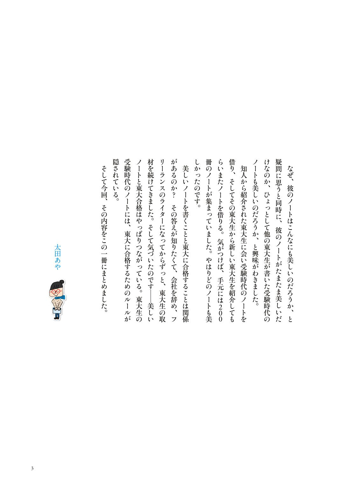

| 東大合格生の秘密の「勝負ノート」 入門編【文春e-Books】 | |
| 太田あや | |
ベストセラー「東大合格生のノートはかならず美しい」の発売から六年、「東大ノート」シリーズ第三弾がいよいよ登場。今回はノートの美しさを紹介するだけでなく、東大合格生が実践していた「勝負ノート」を使った効率的な勉強法にも迫っている。年齢を問わず活用できる「学力向上の奥義」が満載だ。
発売に際して、過去二作のダイジェスト版、解説記事を加えて一冊にまとめたのが、本書『東大合格生の秘密の「勝負ノート」 入門編』である。
目 次
タイトルをクリックするとその文章が表示されます。
文春e-Books
東大合格生の秘密の「勝負ノート」入門編
『東大合格生の秘密の勝負ノート』試し読み

東大合格生の勝負ノートとは？
二月二十五日、受験大国ニッポンの頂点をきわめる東大入試がはじまった。
が、東大に合格する子の多くがもっている「お守り」をご存知だろうか。
実は「勝負ノート」といわれる、肌身離さず持ち歩く特別なノートが東大合格生のお守りなのだ。合格生たちは、「勝負ノート」を受験会場にまで持参し、試験開始ギリギリまで見直すという。
中高生をもつ親御さんの中には、こどもたちがＩＴを駆使し、スマートフォンで勉強しているので、もう、ついていけないと感じておられる人も多いだろう。
たしかに、スマホはこどもたちの世界を劇的に変えている。高校生のスマホ所有率は八二・二％。二〇一一年からの四年間で五・五倍になり、一日四時間以上さわっている子も七人に一人。
そして、メールやゲームだけでなく、スマホで勉強する「スマ勉」も六割にのぼるようになったという（リクルート進学総研調べ）。
しかし、勉強の基本は親の世代と同様ノート。東大に合格するほどの成績をあげるにはノートが成績アップの基本だ。
受験雑誌『螢雪時代』の統括編集長・加納冬樹氏はこう語る。
「センター試験がいずれなくなります。二〇一四年十二月、中央教育審議会答申で大学入試改革が提言され、翌一月、高大接続改革実行プランが発表されました。高校での学び、大学での学び、さらには大学入試、全てを一体的に改革するというものです。センター試験がなくなると、勉強方法は変わるのか。もちろんディテールでは、さまざまでしょうが、本質は変わりません。知識をインプット→他の情報などと関連させたりしながら復習→最終的にアウトプット。これが基本。このプロセスに適したツールがノートなんですね」
六年前、累計五十万部のベストセラーとなった『東大合格生のノートはかならず美しい』シリーズの著者 太田あやさんのシリーズ第三弾『東大合格生の秘密の「勝負ノート」』は、東大ノートを二百冊集め、そのなかの「勝負ノート」を分析・収録している。
「勝負ノート」こそ、東大ノートの究極版。そして、勝負ノートには受験生各自が、自分の弱点を見極めて、自分だけにわかるようにまとめたマル秘のノウハウが詰め込まれている。
太田さんに話を聞いた。
「第一弾から六年たって、東大合格生たちの勉強法は変わったのかと思っていました。でも、ノートをとるという基本は全然変わっていませんでした。
元々、私は、進研ゼミで高校生向けの受験にまつわる会報誌を編集していました。当時はノートに費やす時間があったら参考書に書き込んだり、問題集を解いたりした方が効率がいいだろうと私は思っていましたが、東大生の受験時代のノートをみると、本当にきれいで驚いたのです。そこから東大生の受験時代のノートを集めてみました。すべてに、情報が整理され、最初から最後までテンションが変わらないという特徴をみつけました。これが第一弾の『東大合格生のノートはかならず美しい』を書いた理由です。
お蔭様で、受験生だけでなく、予備校や高校の先生からも評判になり、韓国や台湾でも翻訳されました。以降、六年ぶりに東大生たちに会って、もう一度ノートのつけ方を取材してみると、お守りに気付きました。勝負ノートの存在です」
太田さんによると「勝負ノート」は大きくわけて、
●授業復習型
●問題復習型
の二つがある。
「前者は授業ノートに、模擬テストや問題演習などで間違えた問題や授業以外でえた知識などを書き込んでいき、一元化することで、自分にとってアタマにはいりやすい形で知識を整理してある自作の『参考書』。
後者は模擬テストや問題演習で間違えた問題を復習するためのノートです。間違えた問題とその解答を書き、またどうして間違えたのか理由まで書き込みます。いわば自分の弱点だけを集めた自作の問題集というわけです」
それにしても、授業でノートをとって、その上、それ以外に復習やら弱点補強のためにノートをつけるなんてものすごい意志力ではある。
やはり、東大生はちがう。ウチのコには絶対無理とあきらめるのはまだ早い。
たとえば、
①部活ばかりやっていたのにノート術だけでドーンと成績アップしたのは、東大理科一類に在学中の齋藤皓太君。高二の時点での成績は毎年約三十人が現役合格する私立海城高校において約二百八十人中百二十番台。サッカーに夢中で、しかも部活は高三の六月まで続く。
「勉強のやり方を工夫するしかないので、成績のいい友人を観察したりして、あることに気付いたんです。成績のいい子は二つの型がある。ひとつは天才タイプ。勉強なんかしていないようにみえるのに成績がいい。もうひとつは自分をとことん分析して客観視する自己分析タイプ。自分もそっちにはなれると思い、自己分析タイプの友人を真似て、手のひらサイズの小さなノートに勉強の日程や模擬テストの反省点を綴り、自己分析をはじめたんです」
そこから劇的に成績がアップし現役合格したという。
②幼少期から一度も学習塾には通わず、自力の勉強だけで最難関・東大理科三類に合格したのは、賴友梨恵さん。
「覚えても忘れてしまう用語などを入試直前に確認するために、一冊だけのノートをつくりました。私の場合は、とにかくノートに書いて覚えチェックするの繰り返しです」
③そしてなんと中国から中学一年生のとき再来日（六歳までは日本）。埼玉県の公立中学から筑波大附属駒場に進学、東大に現役合格した中国人の学生までいる。倪辰日君だ。
「中国ではノートは使いません。そもそも書く暇がありませんでした。授業は問題演習の嵐で時間一杯解き続け、そのあと宿題が毎日百問以上あったので、家でも十一時まで、勉強していました。
それに比べると日本の授業はスピートもないし、問題演習も少なく、その上、先生が授業の終わりで必ず『今日の内容をまとめます』というのに驚きました。一年半ほどは疑問をもちながら、板書をしていたのですが、塾の授業で、学校と同様板書をしたところで、ハッとしたんです。知識が整理された状態ではいってくる。自分でもなんてきれいなんだろうと思いました。
以降授業ノートをうつくしく書くことに執心し、わかりづらい場合は帰宅後、大見出しや小見出しをいれて整理しました。日本はなんでも体系的に整理するのが好きだし、得意だと思います。授業ノートは日本のまとめ文化の極致かもしれませんね」
倪君はノートに目覚めて、二年で難関筑波大附属駒場に合格、そして現役東大合格を果たした。
「この子たちはノートを変え、さらに勝負ノートをつくることで自分を追い込んだともいえます。東大受験が教育の最終目標ではありません。ただ、目標にむかって、自分を客観的に分析し、弱点を克服する意志を強くもち続けることは、人生にとってとても大事なことになるはずです。その意味でも、勝負ノートをじっくりこどもたちに研究させる意味はあるのではないでしょうか」（太田さん）
今回の入試改革は、知識偏重から、論文などを重視する、知識活用型に変えるのが目的。そのためにも、ノートを使った勉強が最適なのだという。
前出「螢雪時代」の加納編集長が続ける
「漫然と黒板を写したり、解答を書いたりするだけではなく、自分の言葉を添えたりしながら、わかりやすく表現する。苦手なところを、知識を関連づけたりしながら丁寧に整理して書いていけば、効果的な基礎固めにもなるし、後で見直しても、すっと頭に入ります。
抽象的な概念、対比構造などは、図解することで頭の中が整理され、全体を俯瞰することができます。理解ができていなければ、図や絵に落とし込むことはできませんから、曖昧なところに、自分でも気づくことができます。
受身の学習ではなく、主体的な、積極的な攻めの学習がノートで可能になります。学習の過程で課題が見つかり、その克服のために何をすればいいのか思考を重ねることにもつながり、課題発見力も培われます。
繰り返し見て知識を定着させたり、復習したり、増補したりするためには、きれいに書いておかなければいけません。難関大学合格者のノートがきれいな理由は、ここです。
勉強が進めば進むほどノートは進化し、世界にひとつだけの、それも、自分だけが使いこなせるオリジナル参考書になります。試験当日に弱点だけを見直すといった超実戦的な使い方ができるとともに、きれいに書かれた学習ノートは、自分への大きな自信にもなります。
ノート学習を通じて得られる主体性、思考力、表現力、課題発見力などは、大学受験だけではなく、その後の学びでも、さらには仕事でも必要な力です。
昔から言われる『書いて覚える！』──、やはり普遍の原理です」
中教審の入試改革は、知識詰め込み型から知識活用型への改革が目的。テストから論文重視入試へといわれている。たしかに、問題演習中心のスマ勉より「論文」にも強い勉強方法といえそうだ。
太田さんは、『東大合格生が小学生だったときのノート ノートが書きたくなる６つの約束』まで書いている（三月十九日・講談社から発売）。
こどものために塾に多額のオカネを支払ったりする前に、まずはノートを変えさせるのが教育の第一歩かもしれない。
シリーズ第一弾『東大合格生のノートはかならず美しい』

シリーズ第二弾『東大合格生のノートはどうして美しいのか？』

東大合格生の秘密の「勝負ノート」入門編
２０１５年２月２６日 発行
著 者 太田あや
発行人 村上和宏
発行所 株式会社文藝春秋
東京都千代田区紀尾井町３─２３
郵便番号 １０２─８００８
電話 ０３─３２６５─１２１１
東大合格生の秘密の「勝負ノート」
太田あや
内容紹介
ベストセラー「東大合格生のノートはかならず美しい」の発売から６年、「東大ノート」シリーズ第三弾がいよいよ登場です。今回はノートの美しさを紹介するだけでなく、東大合格生が実践していた「勝負ノート」を使った効率的な勉強法にも迫っています。年齢を問わず活用できる「学力向上の奥義」が満載なので、大学受験を控える高校生や浪人生にはもちろん、お子さんのノート指導に悩んでいる小・中学生の親御さんにもぜひ読んでいただけたらと思います。
東大合格生のノートはかならず美しい
太田あや
内容紹介
東大に合格した高校生のノートを１７５冊も集めた太田さんは、その共通点を分析し、（１）とにかく美しい（２）大学に入学してからもノートを残している（３）余白を作り、授業時間内に理解する努力をしているなど７つの法則を発見しました。多数の東大生のノートを原寸大で公開して、授業ノートの技術を徹底的に解剖するまったく新しい本の誕生です。
東大合格生のノートはどうして美しいのか？
太田あや
内容紹介
話題を呼んだベストセラーの次男坊が誕生します。長男の『東大合格生のノートはかならず美しい』では、賢く、堅実で、ご両親にとっても理想の子供であるような東大生のノートをたくさんお見せしました。しかし、読者からの疑問も多かったのです。一、東大生でもノートの汚い人はいるのでは？ 二、そもそも、本当に「東大ノート」だけが美しいの？ 他の大学は？ こんな読者の疑問に太田さんがノートの現物で答えます。
〈ご注意〉
本作品の全部または一部を、著作権者ならびに株式会社文藝春秋に無断で、複製（コピー）、転載、改ざん、公衆送信（ホームページなどに掲載することを含む）することを禁じます。万一このような行為をすると、著作権法違反で処罰されます。
〈お断り〉
本作品を電子書籍化するにあたり、一部の漢字が簡略体で表示される場合があります。また、ご覧になる機種により、表示の差が認められる場合があります。